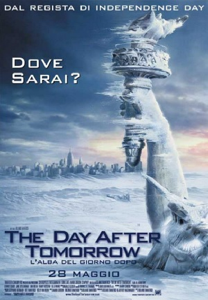

Titolo del Film
Inception, diretto da Christopher Nolan, è un thriller fantascientifico incentrato su Dom Cobb, un ladro professionista specializzato nell'estrarre segreti dalle menti delle persone mentre sognano. Gli viene offerta la possibilità di cancellare il suo passato criminale in cambio di un'impresa quasi impossibile: non rubare un'idea, ma piantarne una nuova nel subconscio di un bersaglio attraverso l'architettura dei sogni multilivello.
- Leonardo DiCaprio
- Joseph Gordon-Levitt
- Elliot Page
- Tom Hardy
The Day After Tomorrow

The Day After Tomorrow, diretto da Roland Emmerich, è un kolossal catastrofico che racconta l'improvviso e devastante stravolgimento del clima terrestre scatenato dal riscaldamento globale. Segue il paleoclimatologo Jack Hall mentre tenta di attraversare un'America congelata per salvare suo figlio, mentre il pianeta viene rapidamente inghiottito da una nuova era glaciale.
- Dennis Quaid
- Jake Gyllenhaal
- Emmy Rossum
- Dash Mihok
Disclosure Day

Disclosure Day, diretto da Steven Spielberg, è un thriller fantascientifico incentrato sulle reazioni dell'umanità e sulle cospirazioni governative e corporative che emergono di fronte alle prove irrefutabili dell'esistenza degli extraterrestri. Segue una meteorologa televisiva ed ex giornalista (Emily Blunt) e un esperto di sicurezza informatica (Josh O'Connor) che cercano di far trapelare la verità al pubblico, affrontando le conseguenze socio-politiche e personali di questa epocale rivelazione.
- Emily Blunt
- Josh O'Connor
- Colin Firth
- Eve Hewson